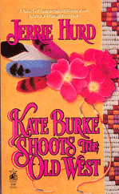

More Info
Kate Burke Shoots the Old West


Porcupine quillwork examples. Porcupines were hunted and the quills harvested. They are sorted and selected then dyed various colors, chewed to flatten and attached to leather with stitches that hold the quills flat. It was the stitch that held the quills flat that was kept secret and shared only with members of the sacred quillworking societies, which, until recently, was limited only to women. Traditionally women also did the hunting and harvesting. When trade beads became available, quillwork was largely abandoned.
|  | ||
Denver Public Library has one of the best collections of old photographs of the American West
Denver Museum of Nature and Science has one of the best collections of Indian quillwork.
Discussion Questions/Reader's Guide |
||
Susan Sontag
On Photography:
"Every portrait of another person is a self-portrait . . .landscape photographs are really inner-landscapes."
"By taking over the task of realistic picturing hitherto monopolized by painting, photography freed painting for its greatest modernist vocation--abstraction."
"Time eventually positions most photographs, even the most amateurist, at the level of art."
"Most tourists feel compelled to put the camera between themselves and whatever is remarkable that they encounter. Unsure of other responses, they take a picture. This give shape to experience: stop, take a photograph, and move on. The method especially appeals to people handicapped by a ruthless work ethic--Germans, Japanese, and Americans."
"You can't say more than you can see."
Highly recommended: Looking at Photographs |
||
Home — Author — Contact — Novels — Memoir — Short Stories — Picture Books —Report Problem
© Jerrie Hurd (text, photos, design)